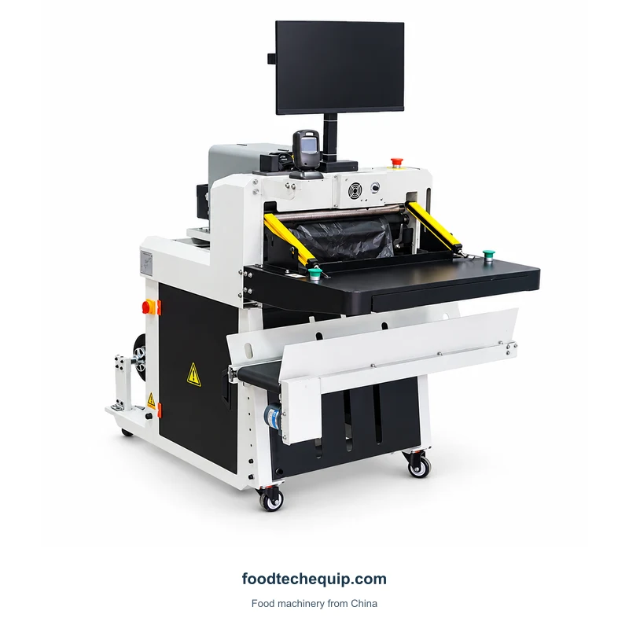
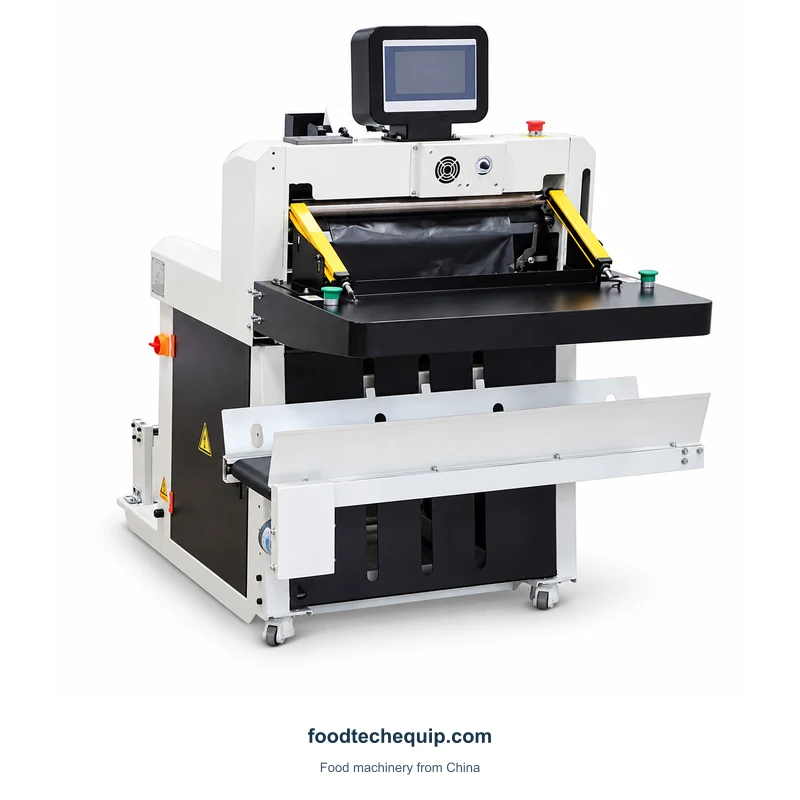

Embalagem em sacos para envio
Máquina automática de embalagem de sacos para correspondência
Equipamento de embalagem de mala postal com superfície de entrada, seção para manuseio de filme e suporte para display.
Ver equipamento
Selecione a imagem para visualizá-la em tamanho maior.
Equipamento de embalagem de mala postal com superfície de trabalho frontal e seção para manuseio de filme.
Seleção de equipamentos · Orientação de instalação · Suporte remoto
Explore informações do produto ↓Explique como os itens serão colocados na superfície frontal e a faixa de tamanho da sacola necessária. Identifique a construção do filme de envio e a tarefa de fechamento na consulta.
Planejar tarefas de encolhimento, selagem de caixas, amarração e codificação ↗| Parâmetro | Valor | Unidade |
|---|---|---|
| Fonte de alimentação | AC 220 V, 50-60 Hz | — |
| Peso total do produto | 60 | kg |
Defina o item dentro da embalagem de envio e as dimensões finais da encomenda. Quando for necessário um código de despacho, especifique a superfície e a posição separadamente da tarefa de fechamento da sacola de remessa.

Equipamento de embalagem de mala postal com superfície de entrada, seção para manuseio de filme e suporte para display.
Ver equipamento